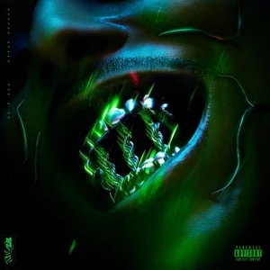

Trinity

Avec son premier album Trinity, Laylow confirme son univers singulier, et nous guide par un fil conducteur tout le long de son album. Inspiré de Matrix, il nous plonge dans sa vision électronique de la réalité. La sortie de Trinity rencontre un succès qui met en lumière le talent de Laylow, la qualité de sa musique et tout le récit qui l'entoure.